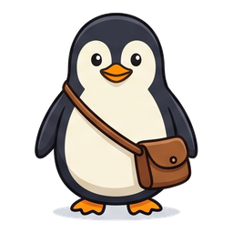
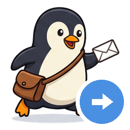
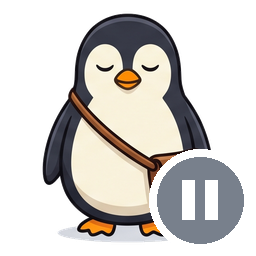
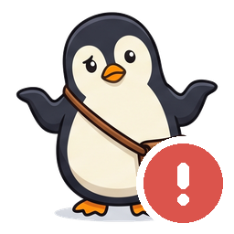

쿨메신저 쪽지를 인박스로 배달하는 펭귄.
쪽지 1건이 마크다운 파일 1개가 됩니다. 첨부파일까지.
쿨메신저로 오는 쪽지는 메신저 안에 갇혀 있습니다. 검색도 백업도 불편하고, PC를 옮기면 통째로 사라지기도 합니다. cool2inbox는 트레이에 조용히 상주하면서 새 쪽지를 마크다운으로 바꿔 드롭박스 인박스에 넣어 둡니다. 드롭박스가 알아서 동기화하니 할 일이 없습니다.
제목·보낸 사람·보낸 시각·받는 사람·본문·첨부파일명까지 담은 .md 파일 하나로.
쪽지별 하위 폴더로 복사하고 본문에서 링크로 연결합니다. 원본은 건드리지 않습니다.
쪽지 고유번호 + 내용 해시 + 인박스 실사, 3중 판정. 몇 번을 다시 실행해도 안전합니다.
기본 5분마다 조용히 확인합니다. 트레이에서 언제든 잠시 멈추고 재개할 수 있습니다.
지난 몇 년치도 한 번에. 진행률을 보며 중간에 멈출 수 있고, 이미 있는 건 건너뜁니다.
쿨메신저 DB와 받은 파일은 읽기 전용으로만 엽니다. 쪽지를 보내거나 지우지 않습니다.
작은 펭귄이 지금 무슨 일을 하는지 색으로 알려 줍니다.

배달 중쪽지를 저장하는 중
일시정지잠시 멈춤
오류확인이 필요해요인박스 안에 쪽지 폴더가 생기고, 그 아래에 마크다운과 첨부파일이 쌓입니다.
D:\Dropbox\Inbox\
└── 쿨메신저\
├── 2026-09-02_1704_홍길동_2학기_교육과정_협의회_#1234.md
├── 2026-09-02_1830_김철수_무제_#1235.md
└── 첨부파일\
└── 2026-09-02_1704_홍길동_#1234\
├── 협의회자료.hwp
└── 참석자명단.xlsx
파일 하나를 열면 이렇게 생겼습니다. 본문은 가공하지 않습니다 — 요약도 마스킹도 없이, 원본 그대로 보관합니다.
--- source: coolmessenger message_key: 1234 title: 2학기 교육과정 협의회 sender: 홍길동 received: 2026-09-02 17:04:52 recipients: [김철수, 이영희, …] attachments: [협의회자료.hwp, 참석자명단.xlsx] --- # 2학기 교육과정 협의회 내일 오후 3시 시청각실에서 협의회를 진행합니다. 첨부된 자료를 미리 읽어 오세요. ## 첨부파일 - [협의회자료.hwp](첨부파일/2026-09-02_1704_홍길동_#1234/협의회자료.hwp)
폴더 두 곳만 정하면 끝납니다. 대부분 자동으로 찾아 드립니다.
⚠️ 저장한 파일은 드롭박스로 동기화됩니다. 업무 쪽지를 외부 클라우드에 올려도 되는지 소속 기관의 규정을 먼저 확인해 주세요.
Windows SmartScreen 경고가 뜨면 추가 정보 → 실행을 눌러 주세요. 코드 서명 인증서가 없어 생기는 경고이며, 프로그램 문제가 아닙니다.
이 프로그램은 인터넷으로 아무것도 보내지 않습니다(새 버전 확인 제외). 모든 처리는 사용자 PC 안에서만 일어납니다.
쪽지 내용은 PC 밖으로 나가지 않습니다. 저장 위치는 사용자가 지정한 드롭박스 폴더뿐입니다.
문제 진단용 로그에는 쪽지 키·시각·파일명까지만 남고 본문·제목은 기록하지 않습니다.
쿨메신저 DB는 임시 복사본을 읽기 전용으로만 엽니다. 원본은 실행 전후로 한 바이트도 바뀌지 않습니다.